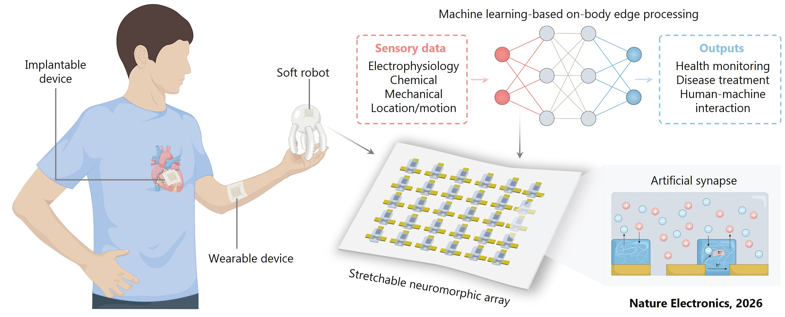
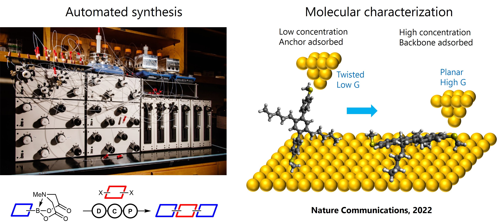
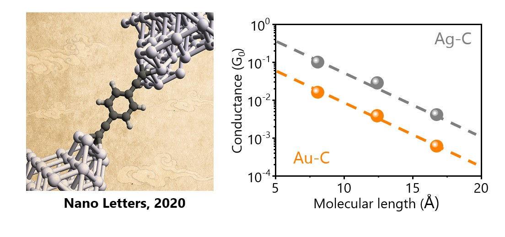
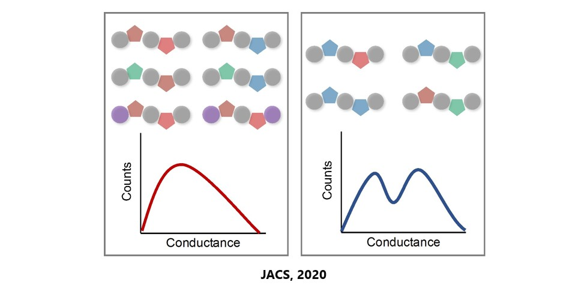

Stretchable neuromorphic electronics for edge computing
Developing high-density, intrinsically stretchable OECT arrays for on-body edge processing of complex physiological data and robotic control.

Automated synthesis for molecular electronics
Leveraging automated synthesis to systematically decode the role of side-chain chemistry for molecular charge transport.

Robust molecule-metal interfaces for charge transport
Establishing stable and robust Ag–C covalent bonds using unprotected terminal acetylenes to enhance molecular conductance and long-term stability.

Charge transport in sequence-defined oligomers
Elucidating the critical role of primary monomer sequence in determining conductance pathways in single-molecule junctions.